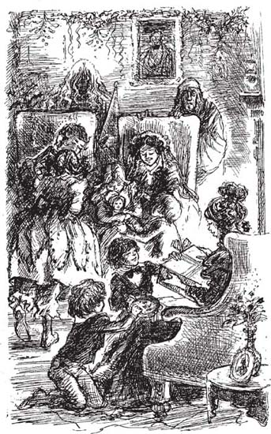

8
Listen to Part 1:

Cô gái yêu Scrooge
Ông bà Fezziwig biến mất. Dick và chàng Ebenezer trẻ tuổi cũng thế.
Rồi Scrooge lại nhìn thấy hình ảnh của chính mình, nhưng giờ ông đã lớn hơn vài tuổi. Vẻ mặt ông nghiêm trọng và đầy lo lắng. Scrooge lại đang nhìn ngắm bản thân trong kiếp trước.
Một cô gái trẻ xinh đẹp đang ngồi cạnh Ebenezer. Cô mặc một chiếc váy đen và khóc nức nở.
Một lần nữa, Giáng Sinh đã về, nhưng không phải là một mùa Giáng Sinh vui vẻ.
Cô gái cất lời: “Chúng ta đã đính hôn từ nhiều năm trước, Ebenezer”. “Khi nào đủ tiền, chúng ta sẽ cưới nhau. Nhưng anh đã thay đổi. Giờ anh quan tâm đến tiền bạc nhiều hơn là quan tâm đến em. Anh không cần phải cưới em đâu. Chúng ta có thể hủy hôn ước này mà.”
Ebenezer đáp: “Belle, anh chưa bao giờ muốn hủy hôn ước của chúng ta cả.”
Cô nói: “Không”, “Đó là sự thật, phải không? Anh yêu tiền hơn em.”
Ebenezer khẽ đáp: “Đúng vậy”. Cô gái đứng lên và bỏ đi, rời xa ông mãi mãi.
Scrooge thốt lên: “Ôi, hồn ma Quá khứ ơi!” “Hãy đưa tôi về nhà. Tôi không muốn nhìn thêm nữa!”
Listen to Part 2:
Hồn ma đáp: “Còn một nơi nữa ông phải tới”, vừa nói hồn ma vừa nắm lấy tay Scrooge. “Hãy nhìn kìa!”
Scrooge nhìn thấy một căn phòng ấm áp và thoải mái. Trong phòng đầy những đứa trẻ ồn ào và vui vẻ. Một cô gái trẻ xinh đẹp đang ngồi bên lò sưởi.
Ban đầu, Scrooge nghĩ đó là Belle. Nhưng rồi ông nhìn thấy Belle đang ngồi đối diện cô gái đó. Belle đã già đi nhiều so với trước, nhưng vẫn rất xinh đẹp. Cô gái kia chính là con gái của Belle.
Cánh cửa mở ra, một người đàn ông bước vào, tay xách đầy đồ chơi và quà Giáng Sinh. Bọn trẻ chạy đến gặp cha mình, người đàn ông ấy cười lớn và cùng chơi với chúng. Cuối cùng, người đàn ông ngồi xuống bên vợ và cô con gái cả.
Scrooge lặng lẽ dõi mắt nhìn. Tại sao người phụ nữ này không phải là vợ ông? Tại sao cô gái này không phải là con gái ông?
Người đàn ông nói với vợ: “Belle, anh vừa nhìn thấy một người em từng quen. Em đoán xem là ai?”
Người phụ nữ cười: “Có phải là ngài Scrooge không?”
Người đàn ông đáp: “Đúng vậy. Anh đi ngang qua văn phòng của ông ta. Ông ta ngồi đó một mình. Người cộng sự của ông ta, Jacob Marley, đã mất ngày hôm nay. Giờ Scrooge chẳng còn gì. Ông ta không có bạn, không có gia đình.”
Scrooge nói: “Hồn ma Quá khứ ơi”, “hãy đưa tôi ra khỏi đây. Tôi không muốn nhìn nữa.”

Listen to Part 3:
Scrooge lặng lẽ dõi mắt nhìn. Tại sao người phụ nữ này không phải là vợ ông? Tại sao cô gái này không phải là con gái ông?
Hồn ma nói với ông già: “Tất cả những điều này đã xảy ra trong kiếp trước của ông”. “Là ông gây ra chúng.”
Scrooge cầu xin: “Làm ơn”, “xin hãy cho tôi về nhà”.
Khi nhìn vào khuôn mặt của hồn ma, Scrooge thấy vô số khuôn mặt khác nhau. Ông nhìn thấy khuôn mặt của tất cả những người đã gặp trong kiếp trước. Một luồng sáng chói chiếu ra từ đầu hồn ma.
Scrooge nhanh chóng nắm lấy chiếc mũ nhọn kẹp dưới cánh tay hồn ma. Ông chụp mũ lên đầu hồn ma. Ông nhấn mạnh chiếc mũ xuống hết mức có thể. Nhưng luồng sáng vẫn không tắt. Nó tỏa xuống mặt đất.
Scrooge rất mệt mỏi. Đột nhiên, ông trở về phòng mình. Ông nằm xuống giường và ngay lập tức chìm vào giấc ngủ.
Mục lục
- Trang tiêu đề
- Mục lục
- Ghi chú về tác giả
- Ghi chú về cuộc sống ở Anh vào thế kỷ XIX
- 1 Ebenezer Scrooge
- 2 Những vị khách đến thăm Scrooge
- 3 Bóng ma của Marley
- 4 Tin tức cho Scrooge
- 5 Bóng ma Quá khứ của Giáng sinh
- 6 Scrooge thời thơ ấu
- 7 Giáng sinh với nhà Fezziwig
- 8 Cô gái yêu Scrooge
- 9 Bóng ma Hiện tại của Giáng sinh
- 10 Giáng sinh với nhà Cratchit
- 11 Ngày Giáng sinh vui vẻ ở khắp mọi nơi
- 12 Bóng ma Tương lai của Giáng sinh
- 13 Tiny Tim
- 14 Một con người đã thay đổi
- Những điểm cần hiểu
- Trang bản quyền